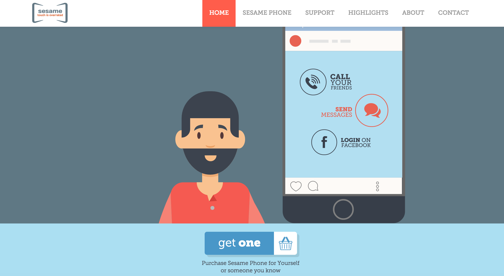
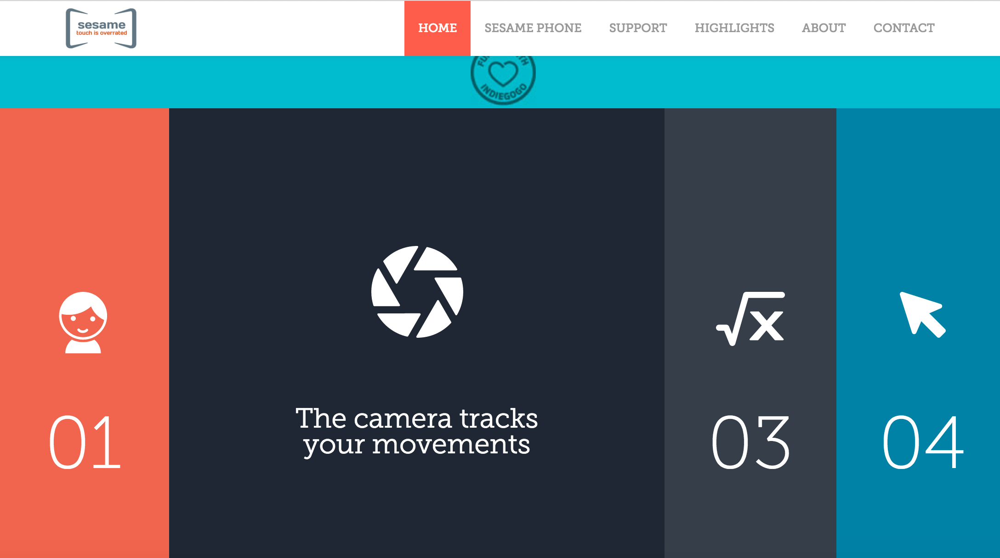
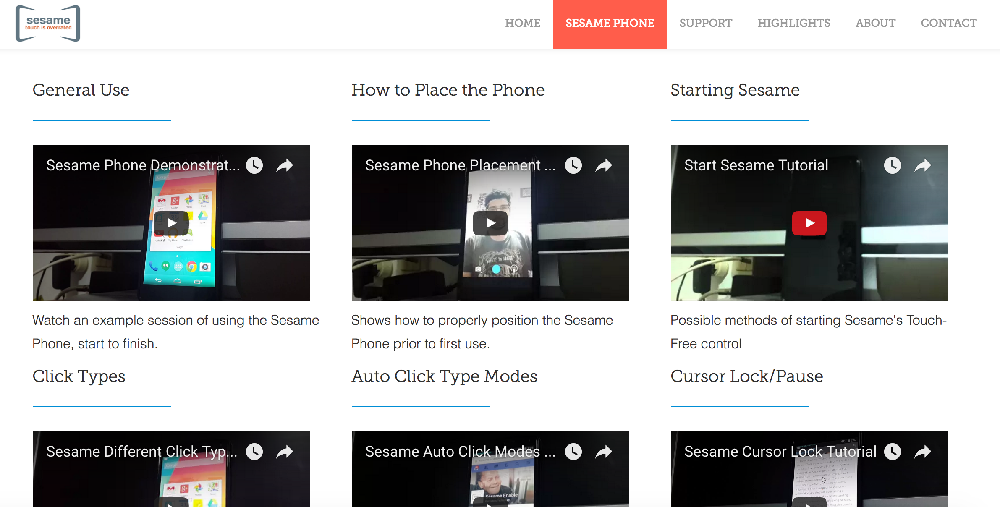
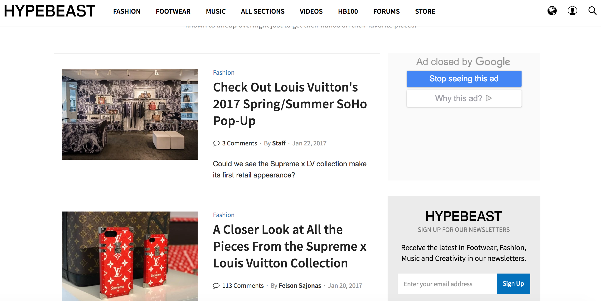
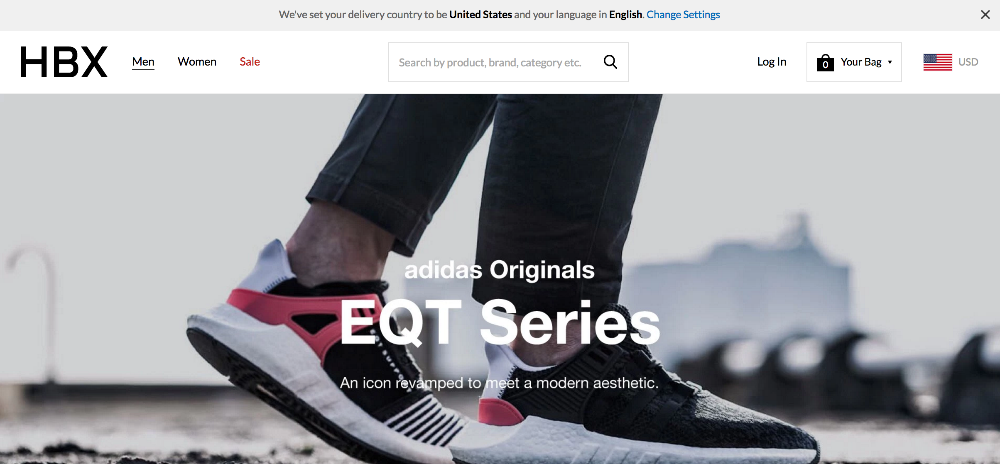
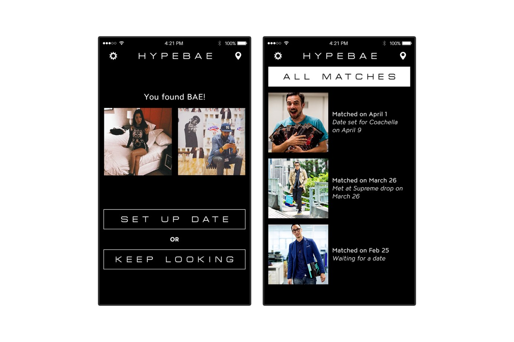
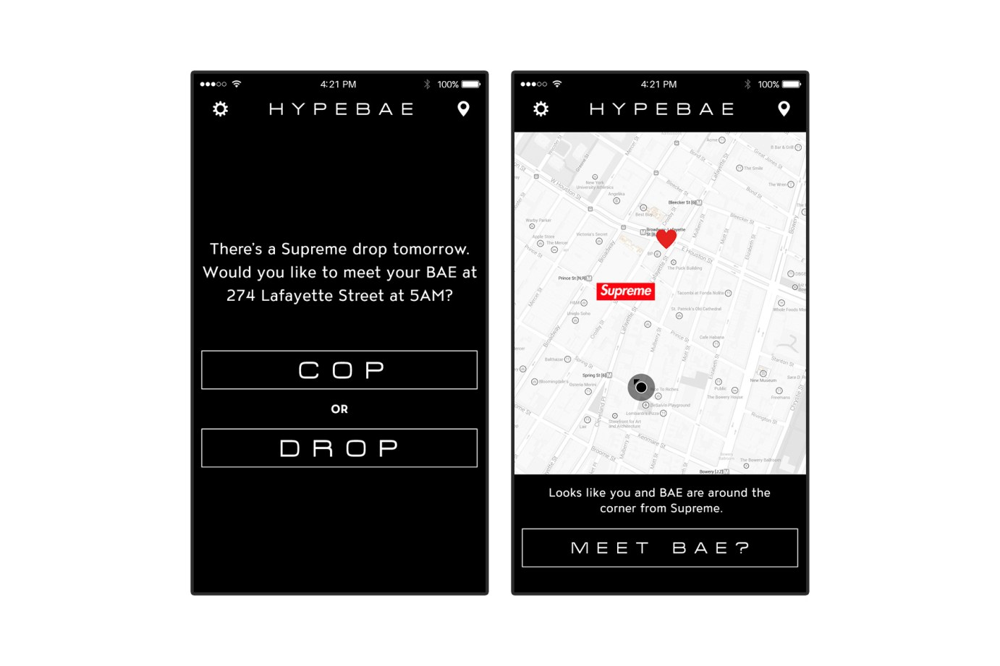

This is a website about one of the techologies for disabled people; it is a website about the Smartphone controlled by head movement.The interaction bewteen the browser and website is fantastic.It shows the data and have lots of clear video tutorials to teach the browser how to use the phone.
  But in fact, I am more likely to build a website/App that can update the new techologies of disablities like update news everyday and link the online shop under the news. There is a sample website and Apps call Hypebeast it has its own website and the website will update fashion news for fashion lover. It is very easy for target browser to know the news and easy to buy the product of the news.I feel like this pattern of website can also work for disabilities.
 The website also has its own App, that people can easily can the news from their smartphone.
 